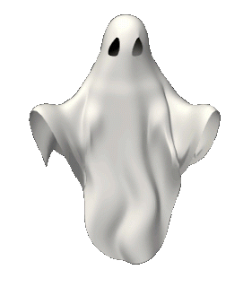
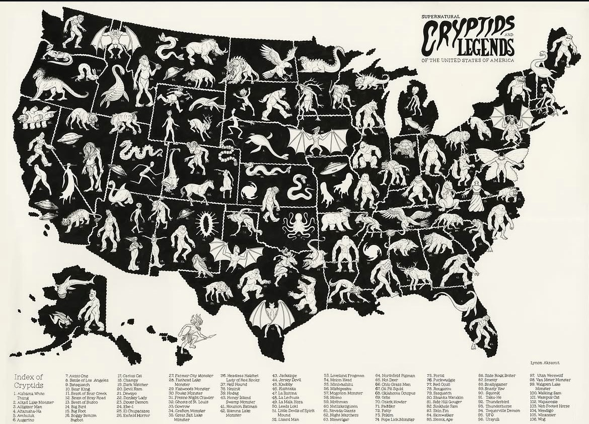

| Welcome Page | Poltergeists |
| Jersey Devil | The Hat Man |
Ever wondered what goes bump in the night? What lies underneath your bed on sleepless nights?
The United States was "discovered" in 1492, and was founded as a country on July 4th, 1776. Despite that, this country was inhabited by people who are indigenous to the land,
dating further back than 15,000 years ago. Allegedly, the oldest account of a cryptid sighting in U.S. history is that of the Cape Ann Serpent in Massachusetts, spotted by writer and
traveler John Josselyn in 1638.

The movie Poltergeist (1982) popularized the premise of paranormal activity happening on ancient burial grounds, but this idea did not just come out of no where. There are personal accounts of haunts occuring on these grounds. Visit the Poltergeists page to learn more.